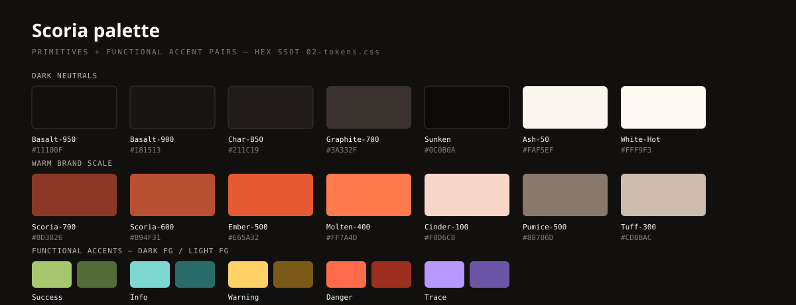
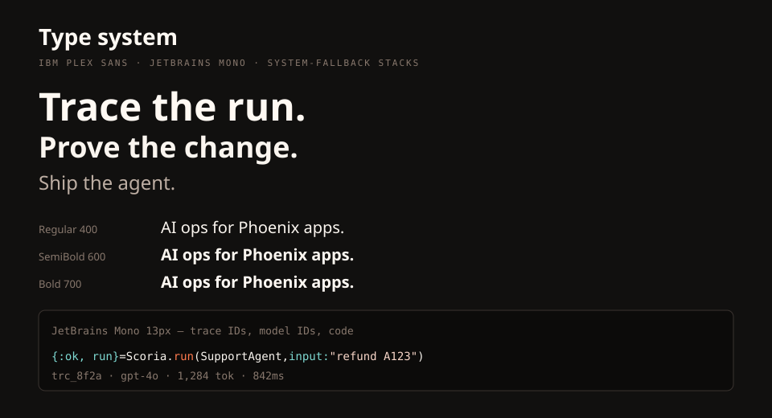
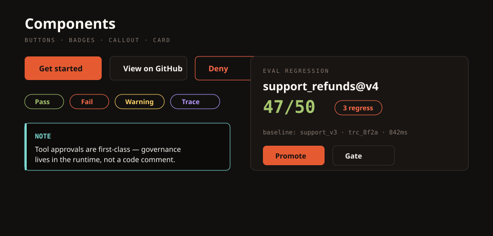
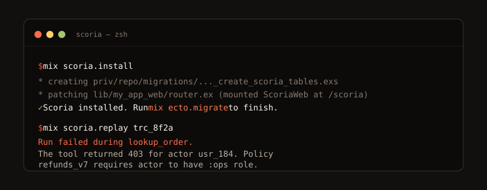
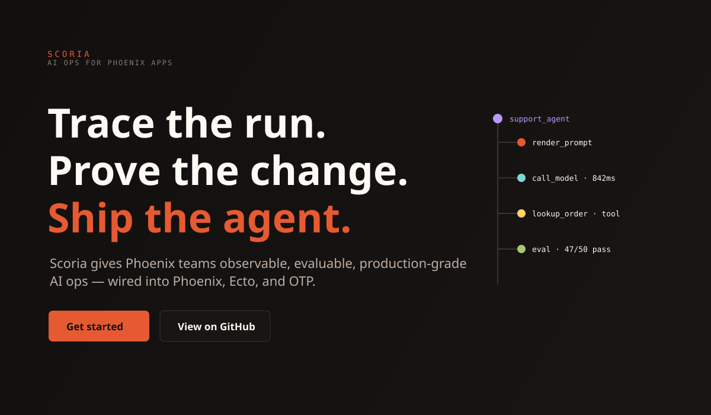
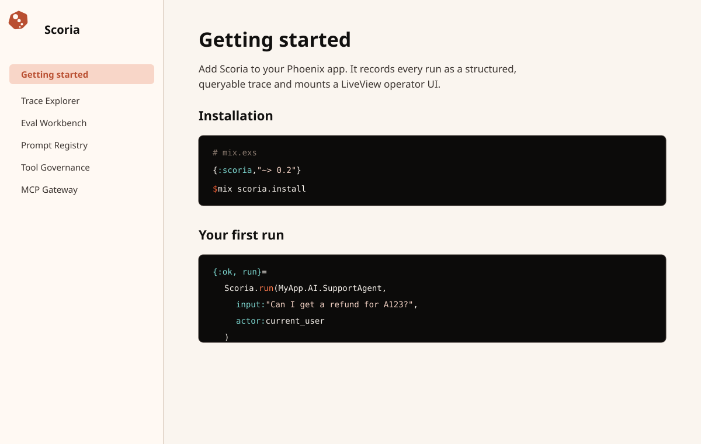
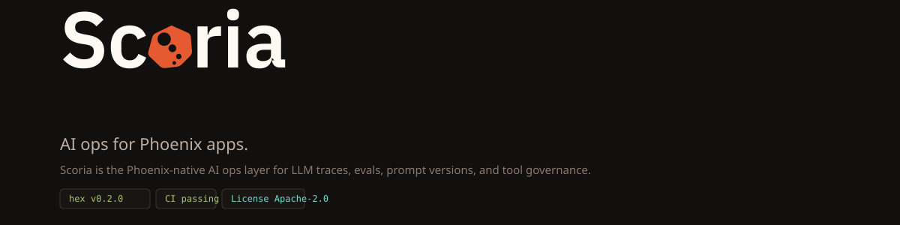

AI ops for Phoenix apps.
Scoria is the Phoenix-native AI ops layer for LLM traces, evals, prompt versions, and tool governance.
Trace the run. Prove the change. Ship the agent.
01
Executive judgment
A 52-pairing WCAG audit found zero FAIL verdicts; the color system is sound. The brand has a specific conceptual center, a coherent warm dark-first palette, a two-tier token system, and a voice formula that is the strongest part of the identity.
Volcanic clarity, porous structure, field-engineer archetype. The metaphor is load-bearing — vesicle cavities map to the internal structure of an AI run.
Langfuse, Arize Phoenix, and Braintrust all read as modern blue-purple SaaS. Scoria's dark-basalt-first, warm-accented, field-engineer register is a different category.
The emotional target is not exciting or aspirational — it is reliable. A control room that stays composed when runs fail, tools are blocked, or evals regress.
02
Brand DNA
AI runs are porous — prompt renders, model calls, tool calls, retrieval events, guardrails, eval scores. Scoria makes that internal structure visible, inspectable, and governable.
Magical / autonomous-feeling · hype-coded ("revolutionary," "10x," "sentient") · phoenix-bird or flame imagery · generic AI aesthetics (neon blue-purple, glassmorphism, sparkles) · black-box oracle positioning · enterprise compliance drag.
The field engineer, not the oracle — the person who catches the regression before it ships, not the one who promises to eliminate regressions forever.
Phoenix / Elixir backend engineers building chat, copilots, RAG, tool-using agents, or MCP workflows. Small teams, indie engineers, and platform / SRE engineers who debug, replay, and govern AI behavior in production. Not enterprise compliance buyers, AI researchers, or Python-first developers.
03
Logo & mark system
The Scoria mark is a porous cinder whose vesicle holes trace a downward span rail (root → LLM → tool → eval). It does not sit beside the wordmark — it fuses into it as the 'o', so the logo is one object, not an icon plus text. The geometry is canonical: recolor and derive from it, never redraw it. The metaphor survives at every size, including the 16px favicon.
Dark ground · logo-primary.svg
Light ground · logo-primary-light.svg
Mark · dark ground
Mark · light ground
Subtitle lockup · dark colorway · social/sticker only
The mark's vesicles are punched holes — the ground shows through. On dark grounds they read as shadow texture; on light grounds the trace rail reads explicitly. Both are correct. The subtitle lockup ships in the dark colorway only; on light surfaces use the primary-light lockup and set the tagline as text.
The monochrome lockup (logo-monochrome.svg) is drawn in currentColor: it takes whatever ink you give it. There is no separate black file and white file — one artwork, inked per surface.
Dark ground · ink White-Hot #FFF9F3
Light ground · ink Basalt-950 #11100F
#11100F on light grounds; warm white White-Hot #FFF9F3 on dark grounds. Never mid-gray, and never an ink that fails 3:1 contrast against its ground.<img>, currentColor renders black — fine on light surfaces. On dark surfaces, inline the SVG (or reference it with <use>) so it inherits the CSS color you set.The primary lockup is two-tone: surface-ink letters with the mark-'o' in the brand accent. The color, not weight, carries the accent (the 'o' is ~7% denser — a deliberate focal accent, not a heavier glyph).
| Surface | Letters | Mark-'o' |
|---|---|---|
| Dark (logo-primary.svg) | White-Hot #FFF9F3 | Ember-500 #E65A32 |
| Light (logo-primary-light.svg) | Basalt-950 #11100F | Scoria-600 #B94F31 |
04
Color
A warm, dark-first volcanic palette is a genuine differentiator. Hex values are identical to assets/css/02-tokens.css (runtime SSOT) and brandbook/tokens.css (docs SSOT), verified by tools/check-consistency.mjs.
Pumice-500 / text-subtle (#88786D) is PASS-LARGE only (3.91–4.48:1). Use only for muted UI metadata — 12–13px monospaced trace IDs, timestamps, icon labels. Never for running body text.
Scoria-600 on Basalt-950 = 3.82:1 — PASS-LARGE (negative control). Do not use Scoria-600 as normal-size dark-mode body text; it is a links/actions color on light surfaces.

PASS-AA ≥ 4.5:1 PASS-LARGE ≥ 3.0:1 (large text / UI only) FAIL < 3.0:1 — Result: 46 PASS-AA · 6 PASS-LARGE · 0 FAIL
| Foreground | Background | Ratio | Verdict | Usage |
|---|---|---|---|---|
| White-Hot | Basalt-950 | 18.19:1 | PASS-AA | main text, dark |
| Ash-50 | Basalt-950 | 17.53:1 | PASS-AA | main text, dark |
| Ash-100 | Basalt-900 | 14.75:1 | PASS-AA | body text, dark |
| Muted-warm | Basalt-950 | 8.82:1 | PASS-AA | muted text, dark |
| Basalt-950 | Ash-50 | 17.53:1 | PASS-AA | main text, light |
| Graphite-700 | Ash-50 | 11.43:1 | PASS-AA | secondary text, light |
| Scoria-600 | Ash-50 | 4.58:1 | PASS-AA | links, light |
| Scoria-700 | Ash-50 | 7.11:1 | PASS-AA | outlines/links, light |
| Ember-500 | Basalt-950 | 5.32:1 | PASS-AA | links/actions, dark |
| Molten-400 | Basalt-950 | 7.37:1 | PASS-AA | high-emphasis, dark |
| Pumice-500 | Basalt-950 | 4.48:1 | PASS-LARGE | RISK: muted labels, dark |
| Scoria-600 | Basalt-950 | 3.82:1 | PASS-LARGE | NEGATIVE CONTROL — §5.5 warns against |
| Success-dark | Basalt-950 | 9.99:1 | PASS-AA | Success-dark on Basalt-950 |
| Info-dark | Basalt-950 | 11.42:1 | PASS-AA | Info-dark on Basalt-950 |
| Warning-dark | Basalt-950 | 13.18:1 | PASS-AA | Warning-dark on Basalt-950 |
| Danger-dark | Basalt-950 | 6.75:1 | PASS-AA | Danger-dark on Basalt-950 |
| Trace-dark | Basalt-950 | 8.10:1 | PASS-AA | Trace-dark on Basalt-950 |
| Success-light | Ash-50 | 5.55:1 | PASS-AA | Success-light on Ash-50 |
| Info-light | Ash-50 | 5.62:1 | PASS-AA | Info-light on Ash-50 |
| Warning-light | Ash-50 | 5.87:1 | PASS-AA | Warning-light on Ash-50 (RISK: Sulfur) |
| Danger-light | Ash-50 | 6.72:1 | PASS-AA | Danger-light on Ash-50 |
| Trace-light | Ash-50 | 5.58:1 | PASS-AA | Trace-light on Ash-50 |
| text (#FAF5EF) | surface-app (#11100F) | 17.53:1 | PASS-AA | shipped dark |
| text-muted (#BDAEA3) | surface-app (#11100F) | 8.82:1 | PASS-AA | shipped dark |
| text-subtle (#88786D) | surface-app (#11100F) | 4.48:1 | PASS-LARGE | shipped dark |
| link (#E65A32) | surface-app (#11100F) | 5.32:1 | PASS-AA | shipped dark |
| text (#FAF5EF) | surface-panel (#181513) | 16.77:1 | PASS-AA | shipped dark |
| text-muted (#BDAEA3) | surface-panel (#181513) | 8.44:1 | PASS-AA | shipped dark |
| text-subtle (#88786D) | surface-panel (#181513) | 4.29:1 | PASS-LARGE | shipped dark |
| action-fg (#11100F) | action (#E65A32) | 5.32:1 | PASS-AA | shipped dark |
| tone-neutral-fg (#CDBBAC) | Basalt-950 | 10.23:1 | PASS-AA | shipped dark |
| tone-pass-fg (#A7C76F) | Basalt-950 | 9.99:1 | PASS-AA | shipped dark |
| tone-info-fg (#7DD8D1) | Basalt-950 | 11.42:1 | PASS-AA | shipped dark |
| tone-warn-fg (#FFD166) | Basalt-950 | 13.18:1 | PASS-AA | shipped dark |
| tone-fail-fg (#FF6B4A) | Basalt-950 | 6.75:1 | PASS-AA | shipped dark |
| tone-trace-fg (#B798FF) | Basalt-950 | 8.10:1 | PASS-AA | shipped dark |
| tone-brand-fg (#FF7A4D) | Basalt-950 | 7.37:1 | PASS-AA | shipped dark |
| text (#11100F) | surface-app (#FAF5EF) | 17.53:1 | PASS-AA | shipped light |
| text-muted (#3A332F) | surface-app (#FAF5EF) | 11.43:1 | PASS-AA | shipped light |
| text-subtle (#88786D) | surface-app (#FAF5EF) | 3.91:1 | PASS-LARGE | shipped light |
| link (#B94F31) | surface-app (#FAF5EF) | 4.58:1 | PASS-AA | shipped light |
| text (#11100F) | surface-panel (#FFF9F3) | 18.19:1 | PASS-AA | shipped light |
| text-muted (#3A332F) | surface-panel (#FFF9F3) | 11.86:1 | PASS-AA | shipped light |
| text-subtle (#88786D) | surface-panel (#FFF9F3) | 4.06:1 | PASS-LARGE | shipped light |
| action-fg (#FFF9F3) | action (#B94F31) | 4.76:1 | PASS-AA | shipped light |
| tone-neutral-fg (#3A332F) | Ash-50 | 11.43:1 | PASS-AA | shipped light |
| tone-pass-fg (#536A39) | Ash-50 | 5.55:1 | PASS-AA | shipped light |
| tone-info-fg (#2A6C69) | Ash-50 | 5.62:1 | PASS-AA | shipped light |
| tone-warn-fg (#7A5A16) | Ash-50 | 5.87:1 | PASS-AA | shipped light |
| tone-fail-fg (#9E2F20) | Ash-50 | 6.72:1 | PASS-AA | shipped light |
| tone-trace-fg (#6A55A7) | Ash-50 | 5.58:1 | PASS-AA | shipped light |
| tone-brand-fg (#8D3826) | Ash-50 | 7.11:1 | PASS-AA | shipped light |
05
Typography
Two typefaces, never a third. Plex Sans is technically neutral, license-safe (OFL), and consistent across the szTheory ecosystem. JetBrains Mono handles Elixir identifiers, trace IDs, model IDs, and token counts. Restraint is the rule — no weight below 400, no decorative weights.
| Where | Typeface | Weight |
|---|---|---|
| Logo wordmark | IBM Plex Sans, converted to outlines | SemiBold 600 |
| Display / hero headlines | IBM Plex Sans | Bold 700 (display only) |
| Titles & headings | IBM Plex Sans | SemiBold 600 |
| UI labels, buttons, nav | IBM Plex Sans | Medium 500 |
| Body & tables | IBM Plex Sans | Regular 400 |
| Code, IDs, metrics, timestamps | JetBrains Mono | Regular 400 / Medium 500 |
The logo SVGs carry the wordmark as outlined paths — reproducing the logo never requires the font to be installed.
| Role | Size | Token |
|---|---|---|
| Display / hero | 56px | --scoria-fs-display |
| Page title | 24px | --scoria-fs-title |
| Panel title | 18px | --scoria-fs-panel |
| Table / body | 14px | --scoria-fs-body |
| Metric number | 30px | --scoria-fs-metric |
| Badge | 11px | --scoria-fs-badge |
| Code / meta | 12px | --scoria-fs-label |
Trace IDs, span labels, timestamps, token counts, and code are always JetBrains Mono.

06
Voice & microcopy
This is the strongest part of the brand. When a new surface ships, write 2–3 microcopy examples in this format before writing any landing-page copy for it. Say what happened, then the next action.
| Say this | Not this |
|---|---|
Run failed during lookup_order. The tool returned 403 for actor usr_184. | Something went wrong. |
| support_refunds@v4 is now the baseline. | Successfully updated! |
| No eval datasets yet. Promote a production trace to start a regression suite. | Nothing here. |
| Running support_agent: rendering prompt, calling model, waiting for tool result. | The AI is thinking… |
| 3 tool calls require approval. | Action needed! ⚠️ |
| Scored 47/50 against baseline support_v3. 3 regressions. | Evaluation complete. |
Run failed during lookup_order. The tool returned 403 for actor usr_184. Policy refunds_v7 requires actor to have :ops role. Trace ID: trc_8f2a.
No eval datasets yet. Promote a production trace to start building a regression suite, or add a test case manually.
Candidate promoted. support_refunds@v4 is now the baseline. 12 new dataset items captured from this run.
Use: runs, spans, traces, evals, scorers, baselines, prompts, prompt versions, approvals, denials, policies, connectors, replay, promote, gate, redaction.
Avoid: revolutionary, seamless, powerful, next-generation, magic, autonomous, hallucination-free, 10x.
07
UI guidance
The shipped dashboard components live in lib/scoria_web/ui.ex — that file is the implementation SSOT. This section governs brand expression, not component anatomy.
Every interactive element has an explicit token set: default / hover / active / focus / disabled / selected. Hover, active, and selected resolve to ember (dark) / scoria-600 (light) tints. Disabled is opacity: 0.38 + cursor: not-allowed.
Every badge and span carries a text label (Pass, Fail, Warning, Pending) visible at all times. Color is secondary confirmation, never the primary differentiator.
Pass Warning Fail
Code ground is #0C0B0A dark / #F1E8DE light. Elixir mapping: atoms in Info-dark, strings in Cinder-100, keywords in Molten-400, comments in Pumice-500, modules in Ash-50. No fake dramatic output — real mix scoria.install results only.
# Real output, evidence voice — never theatrical. Scoria.run(:support_agent, "refund order 8842") #=> %Scoria.Run{ #=> trace_id: "trc_8f2a", #=> spans: [:prompt, :llm, :tool, :eval], #=> status: :completed #=> }


08
Landing & docs blueprints
Capture → annotate → promote → evaluate → compare → gate → deploy → monitor. The landing page and the README tell the same story at different lengths.


{:scoria, "~> 0.2"} + mix scoria.install.Promise (lockup + one-liner + badges) → Installation → Quickstart → Example → Concepts → API overview (link to HexDocs) → Common recipes → Troubleshooting → Design rationale → Contribution → License.
Badges: Hex.pm version · CI · License — standard shields.io, no custom Ember fills. Every section reads like a colleague wrote it.

09
Artifact index
The brandbook directory ships as a unit. SVG and text only — no binaries, no font files. Logos regenerate from tools/; never hand-edit geometry.
| Artifact | Role |
|---|---|
brand-book.md | Canonical guide — source of truth for identity, copy, color, type, voice. |
index.html | This standalone brand book (BRAND-06). |
tokens.css / tokens.json | Design tokens — docs/marketing SSOT (:root-scoped) + structured object. |
logo-primary.svg / -light.svg | Fused lockup, dark / light grounds (two-tone). |
logo-mark.svg | Mark only — favicon source, sidebar, package avatar. |
logo-monochrome.svg / logotype-integrated.svg | Single-currentColor lockup (byte-identical pair). |
favicon.svg | 16px-tuned mark: 3 holes, even-grid snap. |
social-card.svg | OG / Twitter card, 1280×640 (the one documented <rect> exemption). |
examples/*.svg | 7 visual specimens: palette, typography, components, terminal, readme-header, landing-hero, docs-page. |
tools/check-consistency.mjs | Hex consistency gate across tokens.json ↔ tokens.css ↔ 02-tokens.css ↔ brand-book.md. |
pressure-test.md | Historical QA record — the audit whose verdicts this guide absorbed. |
10
QA / quality gate
Eight questions, direct answers. A 52-pairing WCAG audit found zero contrast failures — the shipped runtime tokens needed no changes on accessibility grounds.
Yes — ranked direction, hard logo rules, the full palette with hex values, the type system, spacing/radius tokens, clearspace and minimum-size rules.
Yes — assets/css/02-tokens.css is shipped; the token spec, component anatomy, voice system, and copy blocks are immediately actionable.
Yes — the propagation policy is written into brand-book.md: cosmetic delta stays brand-book-only; a WCAG failure triggers propagation. The consistency gate enforces hex agreement across four sources.
Dark mode: yes. 16px favicon: hard gate. Docs pages: warm Ash-50 light surface confirmed. Token pairings: 52 pairings, 0 FAIL.
52 contrast pairings audited — 46 PASS-AA, 6 PASS-LARGE, 0 FAIL. The 6 PASS-LARGE pairings are all text-subtle / Pumice-500 in muted-metadata contexts and the documented Scoria-600 negative control. No emergency propagation to the runtime tokens is required on accessibility grounds. Hex consistency is enforced by tools/check-consistency.mjs across tokens.json ↔ tokens.css ↔ 02-tokens.css ↔ brand-book.md.